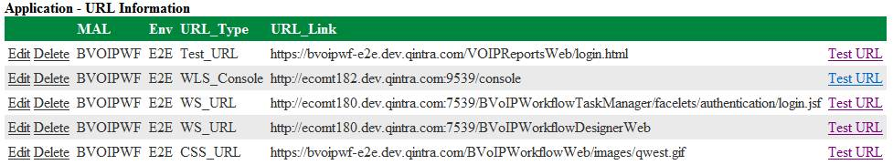

Go to below link to download latest Java Install Manager to your local C: Drive. In this case Java Install Manager 3.5:
http://collaboration.ad.qintra.com/bu/it/scph/otsarch/EnterpriseTest/Installation%20Tools/Forms/AllItems.aspx
Extract zip file contents to a folder of your preference. In this example C:\Install Manager
Edit the Credentials.txt file and replace cuid and password with your LDAP CUID and Password. This is so the tool can log in to the Portal Database and Sync with the requests.
Any Requests assigned to you must be in a status of In-Progress or Work in Progress to be able to be seen by the Install Manager
Once you are sure that all Requests you need to currently work on are in the In-Progress/Work in Progress status Launch the Java Install Manager tool by double clicking on the JavaInstallManager.exe file.
Once Install Manager launches click on the View Install Requests button to see any Install Requests assigned to you for work. From this main window you can also initiate Hard or Rolling bounces as well as spawn putty terminals for specific applications.
Select the request you want to work on and Click Start Installation to begin the Automated install process. Its very important to not disturb your computer while the automated install process is launching the various needed Putty Terminal Windows!!
Java Install Manager will automatically Spawn all the needed windows and perform the necessary Terminal log ins and SUDO scripts to get you ready for your install. Once Install Manager is done you will see one of the terminal windows labeled Install Manager. This is where you select an option to begin the install process. In this case pick option 1 for Full Install
The install manager will automatically extract the needed files from Dimensions and ask you if you would like to continue with the install after that is complete. Input Y for yes to continue.
Install Manager will then perform the needed steps to extract and build the new application code into the appropriate directories on the application servers:
Once the automated install process is complete you will be presented with a SOE Report checklist like below. Before filling out checklist it is VERY important to go back and clean up any old installs to conserve space on the servers!!
After cleanup is complete you can now go back to the InstallManager Terminal and finish the SOE checklist.
After inputting Y to above questions you should see an automated report generated like below. In most cases this should come back as a pass. In some instances however it could be a FAIL due to certain RDD or AMS documents not being present in Dimensions.
After SOE Report is complete go back to the Application Inventory page and verify that the version has been updated with what was just installed.
At this point if everything went as expected you may close out the ticket selecting the Competed status from the Portal. Hit the green checkmark to save and complete out the Request by filling out the Close screen as well below.

To clean up installs typically go back a few directories by typing cd ../..
Rule of thumb is to clean up all old builds except for the current one and one version behind as a back up. In this case version 28.0.0.10 is the oldest version that is not the current and is older than one version behind the current.
Type rm –rf 28.0.0.10 to remove this version. It is important to NOT remove the version associated to the current link.
Before clicking yes to the ‘Are all the URLs working?’ question go to the Application Inventory page for the application in the request and verify its URLs in the URL Information part of the Application Page are all working as expected.
